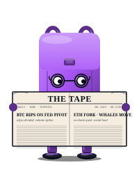

📡
BAGHOLDERAI ADMIN

 BagHolderAI ADMIN
BagHolderAI ADMIN
Live snapshot · Grid + TF ($600 basis)
—
Total P&L
—
net of fees
Today P&L
—
— trades today
Trades (v3)
—
testnet_2
Grid / TF split
—
P&L per fund
Sentinel — fast loop (60s)
Last scan
—
BTC price
—
—
BTC 1h
—
change
Funding
—
8h rate
Speed of fall
stable
0× today
Risk score
—
Opportunity score
—
Sentinel scans every 60s and writes to
sentinel_scores.
Speed-of-fall fires when BTC's 1h drop accelerates beyond the 5m/15m baseline.
📈 Trend — Sentinel signals × BTC price
Risk score (0-100)
Opportunity score (0-100)
BTC price (right axis)
Speed of fall fired
Regime bands:
extreme_fear
fear
neutral
greed
extreme_greed
📋 Sentinel scoring rules (static)
| Rule | Trigger | Δ Risk | Δ Opp |
|---|---|---|---|
| base | always | +20 | +20 |
| btc_drop_10pct_1h | BTC 1h ≤ −10% | +80 | — |
| btc_drop_5pct_1h | BTC 1h ≤ −5% | +50 | — |
| btc_drop_3pct_1h | BTC 1h ≤ −3% | +30 | — |
| btc_drop_2pct_1h | BTC 1h ≤ −2% | +20 | — |
| btc_drop_1pct_1h | BTC 1h ≤ −1% | +12 | — |
| btc_drop_0_5pct_1h | BTC 1h ≤ −0.5% | +6 | — |
| btc_pump_5pct_1h | BTC 1h ≥ +5% | — | +40 |
| btc_pump_3pct_1h | BTC 1h ≥ +3% | — | +25 |
| btc_pump_2pct_1h | BTC 1h ≥ +2% | — | +15 |
| btc_pump_1pct_1h | BTC 1h ≥ +1% | — | +10 |
| btc_pump_0_5pct_1h | BTC 1h ≥ +0.5% | — | +5 |
| speed_of_fall_accelerating | fall accel. and 1h ≤ −0.5% | +20 | — |
| funding_over_leveraged_long_strong | funding > 0.05% | +25 | — |
| funding_over_leveraged_long | funding > 0.03% | +15 | — |
| funding_long_mild | funding > 0.02% | +8 | — |
| funding_long_weak | funding > 0.01% | +4 | — |
| funding_short_squeeze_strong | funding < −0.03% | — | +25 |
| funding_short_squeeze | funding < −0.01% | — | +15 |
| funding_short_mild | funding < −0.005% | — | +8 |
| funding_short_weak | funding < −0.002% | — | +4 |
Drop ladder and pump ladder are mutually exclusive (only the strongest match fires).
Funding ladders fire independently. Both scores clamp to 0-100.
Brief 70b (S70 2026-05-10): added intermediate granularity (drop −2/−1/−0.5, pump
+2/+1/+0.5, funding ±0.02/0.01/0.005/0.002) for the testnet dataset with BTC range ±1%
and funding ±0.00007. Speed-of-fall has a precondition of 1h ≤ −0.5% (anti-noise floor).
Source:
bot/sentinel/score_engine.py + bot/sentinel/price_monitor.py
— parsed manually at build time.
Sentinel — slow loop (4h · regime detection)
Current regime
—
Sentinel slow loop runs every 4h: fetches Fear & Greed Index + CoinMarketCap global metrics,
determines regime (one of 5: extreme_fear → extreme_greed), and writes
sentinel_scores
with score_type='slow'. Sherpa reads the regime to pick the BASE_TABLE row used in
parameter proposals.

NewsKeeper — barometro (news sentiment · shadow/test)
News barometer
—
Barometro (news)
Sentinel regime (5→3)
BTC price (right axis)
Independent signal. The barometer is built from news headlines classified by Haiku
(3 states: bearish / neutral / bullish), written to
The chart above plots both as step lines over the last 14 days (each state holds flat until the next write — no interpolation, so a diagonal would be a lie), on the shared bearish/neutral/bullish axis. BTC price (snapshotted at each barometer write,
newskeeper_regime on flip + 4h heartbeat.
The Sentinel regime above is built from the Fear & Greed Index + CoinMarketCap (5 states). They
measure different things (news mood vs price mood), and the barometer is not wired into Sentinel —
it's a shadow run under validation (forward-return gate ~23 Jun). The comparison collapses Sentinel's
5 regimes onto the barometer's 3-state axis (extreme_fear/fear → bearish, neutral → neutral,
greed/extreme_greed → bullish). Colours differ on purpose: the Sentinel banner uses a fear→greed heatmap
(fear = blue), the barometer uses directional colours (bearish = red), matching the public dashboard.
Read the direction, not the colour — divergence is the interesting case.
The chart above plots both as step lines over the last 14 days (each state holds flat until the next write — no interpolation, so a diagonal would be a lie), on the shared bearish/neutral/bullish axis. BTC price (snapshotted at each barometer write,
btc_price_at_flip) is the faint grey line on the
right axis — it's the real validation axis (~23 Jun): watch whether a barometer flip precedes a BTC move.
The two step lines are nudged a few px apart so they stay visible when they sit on the same level.
Fixed 14-day window, independent of the range selector at the top.
Sherpa — parameter writer (loop 120s · LIVE)
Last proposals (one per bot)
—
| Bot | You (current) | Sherpa (proposed) | Regime | Status |
|---|---|---|---|---|
| loading… | ||||
Each bot shows two rows. Strategy (top):
buy / sell / idle_reentry_h — continuous, amplitude-capped ±30%.
Safety (bottom, Brief S103a): stop_buy_dd% / unlock_h / dead_zone_h / min_profit% on a discrete (regime × volatility-tier) table; the
tier badge is the coin's volatility band (LOW/MID/HIGH). A tier/regime change is held for 24h (debounce) before Sherpa writes it, so a coin on a boundary doesn't flip its safety params on noise.
⚠ diff = proposed ≠ current (Sherpa writes it, unless locked).
🔒 cooldown = a Board override locked the parameter for 24h.
✓ aligned = nothing to do.
Sherpa is LIVE on testnet: it writes bot_config directly (audit in config_changes_log).
📊 Sentinel fast (risk + opp) vs Sherpa proposed
Risk score (0-100, left axis)
Opportunity score (0-100, left axis)
BTC proposed_buy_pct
SOL proposed_buy_pct
BONK proposed_buy_pct
right axis: buy_pct (0.3-3.0)
By design (brief 81a Block 2): the 3 Sherpa lines should look mostly flat against the noisy Sentinel risk + opp lines.
Sprint 1 had Sherpa reading fast-loop scores → 449 risk_score flips ≥20pp in 16 days produced 6-minute proposal flicker (Brain Analysis 2026-05-22). Sprint 2 decouples Sherpa from the fast loop: Sherpa now reads only the slow-loop regime (4h cadence), so proposals change at most every few hours when regime transitions. Per-coin volatility scaling makes the 3 lines diverge in level (BONK higher band, BTC lower) but their shape follows the regime, not the second-by-second risk_score.
What to look for: (a) Sherpa lines clearly separated by coin (per-coin scaling working), (b) Sherpa lines stable between regime transitions, (c) noisy red/green still allowed — that's Sentinel doing its job, the decoupling is intentional.
Risk + Opp are vertically offset by ±2px so they stay visible when they coincide. The 3 buy_pct lines are offset by ±3px (BTC up, SOL center, BONK down). Exact values are in the proposals table above.
What to look for: (a) Sherpa lines clearly separated by coin (per-coin scaling working), (b) Sherpa lines stable between regime transitions, (c) noisy red/green still allowed — that's Sentinel doing its job, the decoupling is intentional.
Risk + Opp are vertically offset by ±2px so they stay visible when they coincide. The 3 buy_pct lines are offset by ±3px (BTC up, SOL center, BONK down). Exact values are in the proposals table above.
📈 Parameters history
buy_pct
sell_pct
idle_reentry_hours
BTC
SOL
BONK
📋 Sherpa parameter rules (static)
BASE_TABLE — base parameters per regime
| Regime | buy_pct | sell_pct | idle_reentry_h |
|---|---|---|---|
| extreme_fear | 2.5 | 1.0 | 4.0 |
| fear | 1.8 | 1.2 | 2.0 |
| neutral | 1.0 | 1.5 | 1.0 |
| greed | 0.8 | 2.0 | 0.75 |
| extreme_greed | 0.5 | 3.0 | 0.5 |
The active regime is shown in the Current regime banner above (driven by Sentinel's slow loop). The base values for that regime are scaled by the per-coin volatility multiplier below before the absolute clamps and the amplitude cap are applied.
Volatility multipliers — per-coin amplitude scaling (Sprint 2, brief 81a)
| Coin | multiplier | Notes |
|---|---|---|
| BTC/USDT | 1.00 | anchor — by definition |
| SOL/USDT | 1.60 | ~1.6× BTC stdev (7d, 1h candles) |
| BONK/USDT | 2.09 | ~2.1× BTC stdev — wider sell_pct / buy_pct band |
Multiplier =
Values above are a static snapshot taken at commit
stdev(log_returns(coin, 7d, 1h)) / stdev(log_returns(BTC, 7d, 1h)).
Applied to buy_pct and sell_pct only (idle_reentry_hours is time, not amplitude). Computed by bot/sherpa/volatility.py with 1h cache + dynamic coin discovery from bot_config (no hardcoded list — any active symbol works).
Values above are a static snapshot taken at commit
3ba1132 (2026-05-22 S81). Live values move slowly: refresh manually next time you audit.
RANGES — absolute clamps + amplitude cap
| Parameter | min | max |
|---|---|---|
| buy_pct | 0.3 | 3.0 |
| sell_pct | 0.8 | 4.0 |
| idle_reentry_hours | 0.5 | 6.0 |
After the regime base × volatility multiplier is computed and absolute-clamped above, an amplitude cap bounds the change vs the current
Stop-buy lamp:
bot_config value:
current × (1 − MAX_DELTA_PCT) ≤ proposed ≤ current × (1 + MAX_DELTA_PCT), with MAX_DELTA_PCT = 0.30 (30%). Skipped when current is None or 0 (first run). Cap source: config/settings.py → HardcodedRules.MAX_DELTA_PCT.
Stop-buy lamp:
proposed_stop_buy_active = (regime == "extreme_fear") — a derived flag (the slow loop, no longer the fast-loop risk_score threshold); it stays a flag, Sherpa doesn't write it. The stop-buy threshold stop_buy_drawdown_pct itself is now Sherpa-managed (Brief S103a, the safety sub-row above), no longer Board-only.
Source: strategy params
bot/sherpa/parameter_rules.py (Sprint 2: final = clamp_amplitude( clamp_range( BASE_TABLE[regime] × volatility_multiplier ), current ); the Sprint-1 fast-signal ladders were removed in brief 81a Block 2 because they fired on fast-loop noise) + safety params bot/sherpa/board_parameter_rules.py (Brief S103a: discrete BOARD_TABLE[regime][tier], no cap, debounced 24h via bot/sherpa/board_debounce.py) + bot/sherpa/volatility.py. Phase B will reintroduce fast intelligence on the Sentinel side, not here.
⚖️ Reconciliation (Binance)
Latest run per symbol
—
| Bot | Last run | Status | Bin / DB | Matched | Drift | Notes |
|---|---|---|---|---|---|---|
| loading… | ||||||
Status:
OK qty/price/fee within tolerance ·
WARN_BINANCE_EMPTY Binance returned 0 trades (probable testnet reset) ·
DRIFT matched orders out of tolerance ·
DRIFT_BINANCE_ORPHAN order on Binance not in DB.
Manual run on Mac Mini:
Manual run on Mac Mini:
python3.13 scripts/reconcile_binance.py --write. Nightly cron at 03:00 Europe/Rome via cron_reconcile.sh (brief 71a, S71).
📊 Trade-by-trade compare (latest)
| ts (UTC) | sym | side | qty Bin | qty DB | Δ% qty | px Bin | px DB | Δ% px | fee Bin | fee DB | Δ fee |
|---|---|---|---|---|---|---|---|---|---|---|---|
| loading… | |||||||||||
Snapshot of the latest run per symbol — every Binance↔DB matched order side-by-side. All deltas should be 0 in normal operation; non-zero deltas above tolerance trigger DRIFT status.
📈 Market prices
One line per actively-traded coin (
bot_config.is_active = true, any bot). Price from Binance public spot
klines (api.binance.com/api/v3/klines, no key) — real market context, not the bot's testnet fills.
Charts appear/disappear as the active coin set changes; the window follows the range selector above. Coins not on
Binance spot show "not on Binance spot".
💾 DB monitor
Supabase storage (free tier 500 MB)
—
— used of 500 MB
Top tables by size
| Table | Rows | Size | Last activity |
|---|---|---|---|
| loading… | |||
Sentinel retention: 30d. Sherpa retention: 60d. Events log: 14d. Snapshots: 7d.
Cleanup runs daily at 04:00 UTC via
Sizes live via RPC
db_maintenance.py (brief 59b).
Sizes live via RPC
public.get_table_sizes() (S70b). Rows: exact for tables with created_at; ~prefix means pg_class.reltuples estimate (refreshes on next ANALYZE).